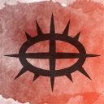

Spell Book 
Blight Touch

-0-
(SoLK)
-
You touch a creature causing decay to spread through their body. Make a melee spell attack against one creature within 5ft of you. On a hit, the target takes 1d4 necrotic damage and must make a Constitution saving throw. On a failed save, it is also poisoned until the start of your next turn.
Flash Sword

-0-
(SoLK)
-
An illusionary blade forms in your hand. Make a melee spell attack against the target. On a hit, the target takes 1d10 bludgeoning or piercing or slashing damage (non-magical), you choose each time you cast this cantrip. The magic holding the illusionary blade together fades after making 1 attack.
Spellscar Blade 
1st
(EotS)
-
You draw forth the energy of your Spellscar to form a sword of blue fire in your hand. This magic sword lasts until the spell ends. It counts as a simple melee weapon with which you are proficient. It deals 1d8 fire damage on a hit and has the finesse and light properties. Additionally, when you attack a creature that has already taken fire damage this round, you have advantage on the attack (maximum of once per turn).
Acid Arrows

2nd
(SoLK)
-
You touch a quiver containing arrows or bolts. When a target is hit by an attack using a piece of ammunition drawn from the quiver, the target takes an extra 1d4 acid damage. The spell’s magic ends on the piece of ammunition when it hits or misses.